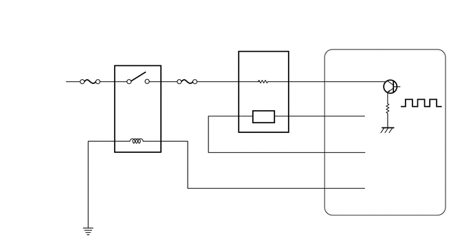

1ZR-FE 发动机控制系统 SFI 系统 P0031 氧 (A/F) 传感器加热器控制电路低电位 (B1 S1) P0032 氧 (A/F) 传感器加热器控制电路高电位 (B1 S1) P101D A/F 传感器加热器电路性能 (B1 S1) 卡在 ON 位置
描述
请参考 DTC P2195。
单击此处 发动机/混合动力系统>1ZR-FE 发动机控制系统>SFI 系统>P2195201406,999999,_51,_023949,_0116049,RM100000000D7QF_01,P2195
- 提示：
- ·
存储这些 DTC 中的任一个时，ECM 进入失效保护模式。失效保护模式下，ECM 关闭空燃比传感器加热器。失效保护模式持续直至将点火开关置于 OFF 位置。
·尽管 DTC 标题中提及氧传感器，但这些 DTC 与空燃比传感器有关。
·ECM 提供脉宽调制控制电路以调节通过加热器的电流。空燃比传感器加热器电路使用电路 +B 侧的继电器。
0.083,0.094 2.802,0.26 2.719,0.167 10 false 参考（S1 系统图）： 0.156,1.167 0.99,1.333 0.833,0.167 10 false 自蓄电池 1.073,1.323 1.906,1.49 0.833,0.167 10 false EFI-MAIN 1.802,2.375 2.646,2.542 0.844,0.167 10 false EFI-MAIN 2.604,1.333 3.448,1.5 0.844,0.167 10 false 2 号 EFI 3.583,2.073 4.729,2.24 1.146,0.167 10 false 空燃比传感器 3.26,1.552 3.771,1.74 0.51,0.188 10 false A1A- 4.438,1.552 4.948,1.74 0.51,0.188 10 false A1A+ 4.427,1.031 4.938,1.219 0.51,0.188 10 false HA1A 3.365,1.042 3.875,1.229 0.51,0.188 10 false +B 3.781,0.906 4.292,1.094 0.51,0.188 10 false 加热器 3.76,1.333 4.271,1.521 0.51,0.188 10 false 传感器 4.948,1.031 5.458,1.219 0.51,0.188 10 false HA1A 4.969,1.563 5.479,1.75 0.51,0.188 10 false A1A+ 4.979,2.104 5.49,2.292 0.51,0.188 10 false A1A- 4.969,2.635 5.5,2.802 0.531,0.167 10 false MREL 6.063,1.708 6.75,1.875 0.688,0.167 10 false 占空控制 5.74,3.292 6.25,3.479 0.51,0.188 10 false ECM
| DTC 编号 | 检测项目 | DTC 检测条件 | 故障部位 | MIL | 存储器 |
|---|---|---|---|---|---|
| P0031 | 氧 (A/F) 传感器加热器控制电路低电位 (B1 S1) | 即使空燃比传感器加热器占空比为 30% 或更大，空燃比传感器加热器电流仍小于 0.8 A（单程检测逻辑）。 | ·
空燃比传感器 (S1) 加热器电路开路 ·
空燃比传感器 (S1) ·
ECM |
点亮 | 存储 DTC |
| P0032 | 氧 (A/F) 传感器加热器控制电路高电位 (B1 S1) | 空燃比传感器加热器电流达到上限（单程检测逻辑）。 | ·
空燃比传感器 (S1) 加热器电路短路 ·
空燃比传感器 (S1) ·
ECM |
点亮 | 存储 DTC |
| P101D | A/F 传感器加热器电路性能 (B1 S1) 卡在 ON 位置 | 加热器不工作时，加热器电流大于规定值（单程检测逻辑）。 | ECM | 点亮 | 存储 DTC |
监视描述
ECM 利用来自空燃比传感器的信息来调节空燃比，使其接近理论值。这可以最大程度地提高三元催化转化器净化废气的能力。
空燃比传感器检测废气中的氧浓度，并将信息发送至 ECM。传感器元件的内表面暴露于外界空气中。传感器元件的外表面暴露在废气中。传感器元件由镀铂氧化锆制成并包含一个集成加热元件。
废气中的氧浓度和外界空气中的氧浓度存在巨大偏差时，氧化锆元件产生低电压。镀铂层放大了产生的电压。
空燃比传感器加热时效率更高。废气温度低时，传感器在没有辅助加热的情况下不能产生有用的电压信号。ECM 利用占空比调节辅助加热以调节传感器加热器元件中的平均电流。如果加热器电流不在正常范围内，则空燃比传感器传输的信号将不准确。因此，ECM 将不能正确调节空燃比。
空燃比传感器加热器中的电流超出正常工作范围时，ECM 将此视为传感器加热器故障并存储 DTC。
监视策略
| 工作频率 | 持续 |
典型启动条件
| 加热器输出占空比 | 30% 或更大 |
| 加热器输出占空比 | 大于 0% |
| 满足以下两个条件 | - |
| 空燃比传感器加热器占空比 | 10% 或更大，且小于 60% |
| 空燃比传感器加热器打开电流 | 0.8 A 或更大 |
确认行驶模式

将 GTS 连接到 DLC3。
将点火开关置于 ON 位置并打开 GTS。
清除 DTC（即使未存储 DTC，也应执行清除 DTC 程序）。
将点火开关置于 OFF 位置并等待至少 30 秒。
将点火开关置于 ON 位置并打开 GTS [A]。
起动发动机并怠速运转 5 分钟或更长时间 [B]。
车辆静止时，踩下加速踏板并保持发动机转速 3,000 rpm 达 1 分钟 [C]。
怠速运转发动机 5 分钟或更长时间 [D]。
进入以下菜单：Powertrain / Engine and ECT / Trouble Codes [E]。
读取待定 DTC。
- 提示：
- ·
如果输出待定 DTC，则系统发生故障。
·如果未输出待定 DTC，则执行以下程序。
进入以下菜单：Powertrain / Engine and ECT / Utility / All Readiness。
输入 DTC：P0031、P0032 或 P101D。
检查 DTC 判断结果。
| GTS 显示 | 描述 |
|---|---|
| NORMAL | ·
DTC 判断完成 ·
系统正常 |
| ABNORMAL | ·
DTC 判断完成 ·
系统异常 |
| INCOMPLETE | ·
DTC 判断未完成 ·
确认 DTC 启动条件后，执行行驶模式 |
| N/A | ·
无法执行 DTC 判断 ·
不满足 DTC 前提条件的 DTC 数量达到 ECU 存储器极限 |
- 提示：
- ·
如果判断结果显示 NORMAL，则系统正常。
·如果判断结果显示 ABNORMAL，则系统存在故障。
·如果判断结果显示为 INCOMPLETE 或 N/A，则再次执行步骤 [B] 至 [E]。
电路图
注意/小心/提示
- 备注：
-
进行下列程序前，先检查与此系统相关电路的保险丝。
- 提示：
- ·
请参考“数据表/主动测试”[A/F Heater Duty #1]。
单击此处 发动机/混合动力系统>1ZR-FE 发动机控制系统>SFI 系统>数据表/主动测试201406,999999,_51,_023949,_0116049,RM100000000D7Q8,
·S1 指距发动机总成最近的传感器。
·S2 指距发动机总成最远的传感器。
·使用 GTS 读取定格数据。存储 DTC 时，ECM 将车辆和驾驶条件信息记录为定格数据。进行故障排除时，定格数据有助于确定故障出现时车辆是运行还是停止，发动机是暖机还是未暖机，空燃比是浓还是稀，以及其他数据。
·使用主动测试提供的控制 A/F 传感器喷油量功能改变喷油量并监视空燃比传感器输出电压（单击此处 发动机/混合动力系统>1ZR-FE 发动机控制系统>SFI 系统>P0136201406,999999,_51,_023949,_0116049,RM100000000D7QQ_10,P0136）。进行主动测试时，如果传感器的输出电压不改变（几乎无反应），则传感器可能有故障。
程序
检查空燃比传感器。
单击此处 发动机/混合动力系统>1ZR-FE 发动机控制系统>空燃比传感器>检查201406,999999,_51,_023949,_0117707,RM100000000DE7R,
- 提示：
-
更换空燃比传感器后，执行“维修后检查”。
-
单击此处 发动机/混合动力系统>1ZR-FE 发动机控制系统>SFI 系统>初始化201406,999999,_51,_023949,_0116049,RM100000000D7Q2,
- 结果:
转至 正常 异常
正常
异常
| *a | 线束连接器前视图
（至空燃比传感器） |
断开空燃比传感器连接器。
将点火开关置于 ON 位置。
根据下表中的值测量电压。
- 标准电压:
检测仪连接 条件 规定状态 B18-2 (+B) - 车身接地 点火开关 ON 11 至 14 V
- 结果:
转至 正常 异常
正常
异常
断开空燃比传感器连接器。
断开 ECM 连接器。
根据下表中的值测量电阻。
- 标准电阻:
检测仪连接 条件 规定状态 B18-1 (HA1A) - B39-27 (HA1A) 始终 小于 1 Ω B18-1 (HA1A) 或 B39-27 (HA1A) - 车身接地 始终 10 kΩ 或更大
- 结果:
转至 正常 异常
正常
异常
将 GTS 连接到 DLC3。
将点火开关置于 ON 位置。
打开 GTS。
清除 DTC。
- Powertrain > Engine and ECT > Clear DTCs
- 50002 234
将点火开关置于 OFF 位置并等待至少 30 秒。
将点火开关置于 ON 位置。
打开 GTS。
按照确认行驶模式中所述的行驶模式驾驶车辆。
进入以下菜单：Powertrain / Engine and ECT / Trouble Codes。
读取 DTC。
- Powertrain > Engine and ECT > Trouble Codes
- 50001 234
- 结果:
结果 转至 未输出 DTC A 输出 DTC P0031、P0032 或 P101D B
A
单击此处 发动机/混合动力系统>1ZR-FE 发动机控制系统>SFI 系统>检查是否存在间歇性故障201406,999999,_51,_023949,_0116049,RM100000000D7Q0,
B